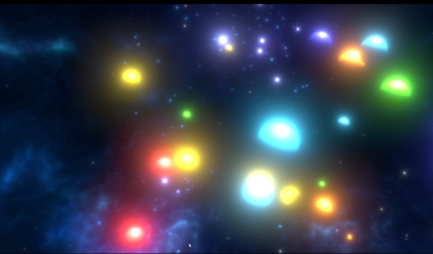
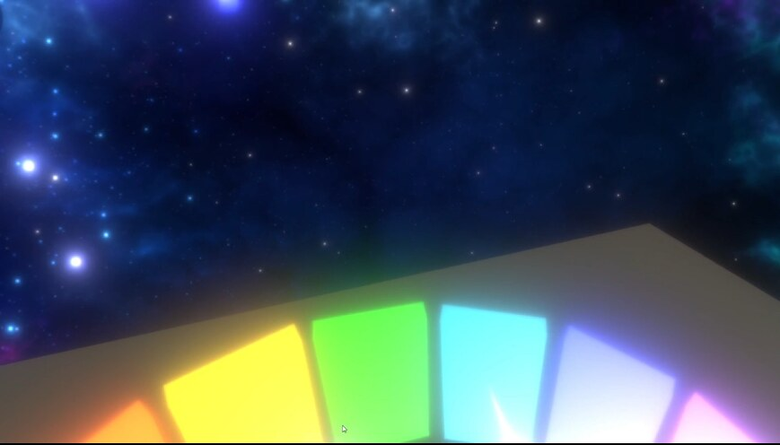
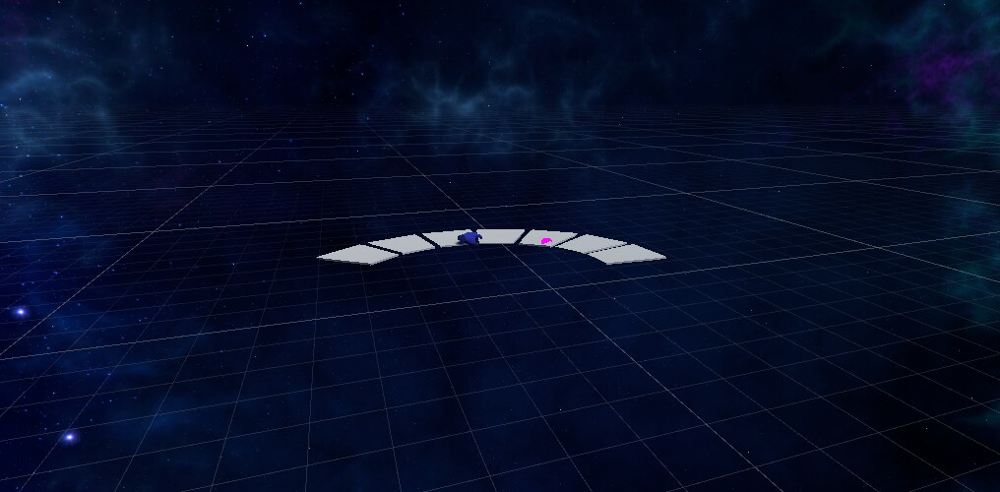
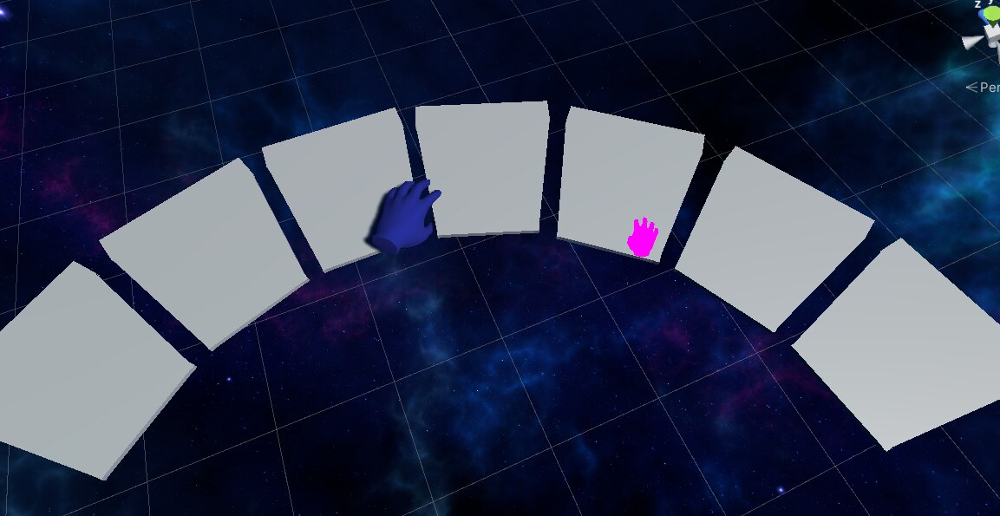

A VR piano that turns music into color — play a note and a glowing orb bursts into a 360° sky built to make you forget there's a room behind the headset.
Put on the headset and you're standing on a small floating platform in the middle of deep space. In front of you is a glowing, color-coded piano, its keys curved in an arc so your hands can reach every note without moving. Above and around you: nothing but stars, nebulae, and open sky in every direction — a full 360° environment built to make you forget there's a room behind the headset.
Play a note, and a glowing orb bursts into the sky above you, sized and colored to match what you just played. Play a chord, and the sky fills with a small constellation of color. There's no score, no wrong notes, no task to complete — just a piano and a sky that responds to whatever you create. It's designed to be picked up with zero instructions: aim a controller at a key, pull the trigger, and watch what happens.
A 360° capture of the piano and space environment.


Every note spawns its own glowing orb — colored, sized, and placed to match what's played.
The idea started with synesthesia itself — the neurological condition where senses blend, where people can "see" sound or "taste" color. I wanted to build something that let anyone feel a version of that blending, even for a few minutes, by tying two senses together through code instead of biology.
Before diving into build mode, I researched how immersive interaction design handles sensory feedback more broadly — how other VR systems translate physical input into rich sensory output, and where the technology still falls short. Two threads shaped the direction most:
That research didn't hand me specific features — it shaped the interaction philosophy. Keep the input dead simple (a key press, a raycast, a trigger pull), and put all the design effort into making the output feel rich and immediate.
The project is built in Unity using the XR Interaction Toolkit, developed iteratively with a co-developer across several milestones.


Early prototyping — testing the keyboard layout and hand tracking before any visual polish.
I ran a small user study with no instructions given beyond "explore" — the goal was to see how intuitive the experience was completely on its own. A few findings stood out:
This is an ongoing side project I keep coming back to. Based directly on what testers asked for, here's what would turn it from a prototype into a full experience:
Park, concert hall, arctic, forest, cozy home — alternate skyboxes players can switch between, building on the early background-swapping groundwork already in place.
Choose environment, color scheme, and play mode in-headset, replacing the current "swap files manually" approach.
Monochrome and alternate palettes beyond the original rainbow note-to-color mapping.
A wider note range for playing real songs, not just a single octave.
Floating sheet music or glowing key prompts showing which note to press next when a song is imported — directly addressing the most common piece of user feedback.
Import a song and just watch and listen — no piano-playing required, for a fully passive "orchestral" experience.
Building this taught me a lot about the mechanics of VR development — collaborating in Unity, scripting real-time interactions, working with XR hand tracking — but the bigger lesson was about attention. Feedback loops only work if the player is actually looking at the payoff. That single insight from watching six people play has shaped how I think about interface feedback in every project since, VR or otherwise.